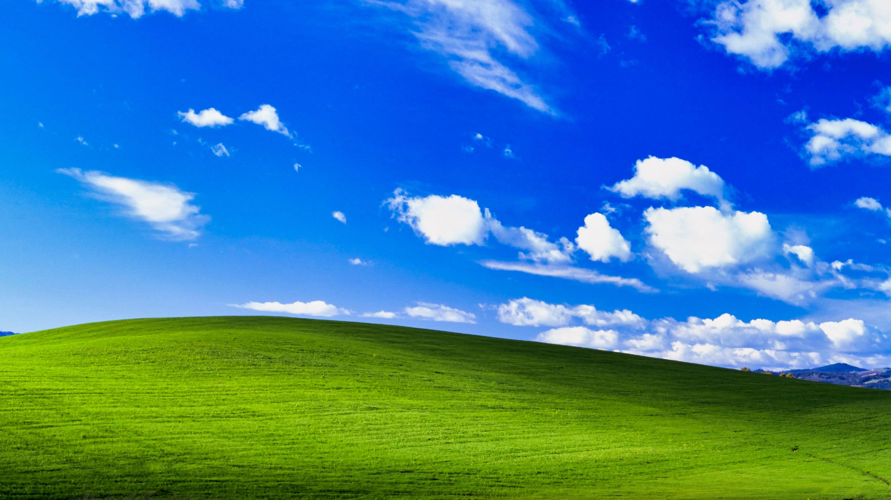
 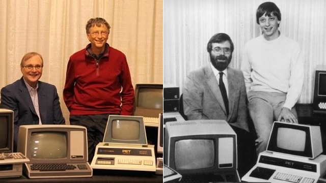
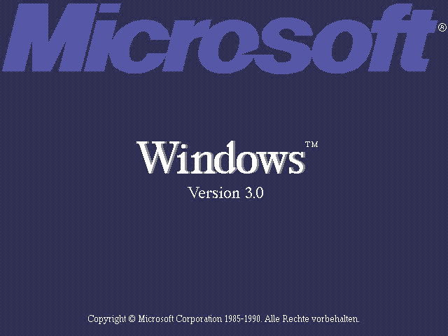
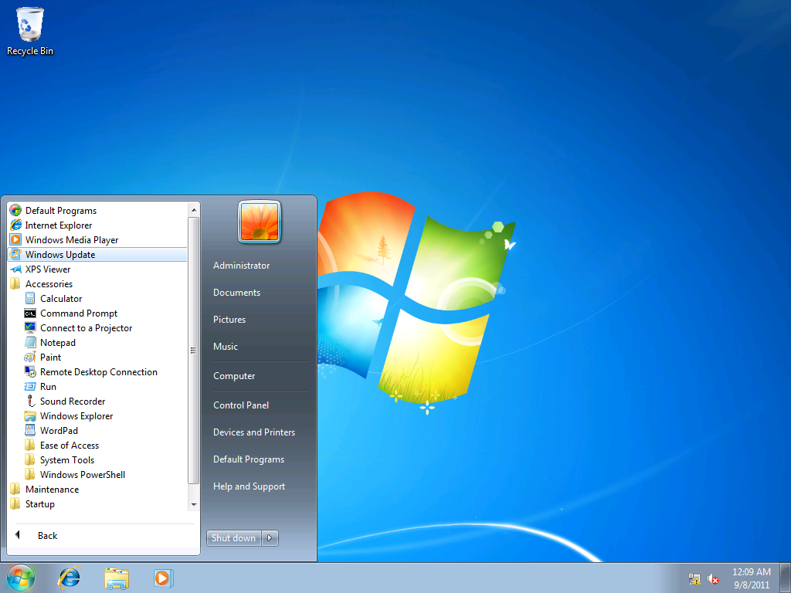
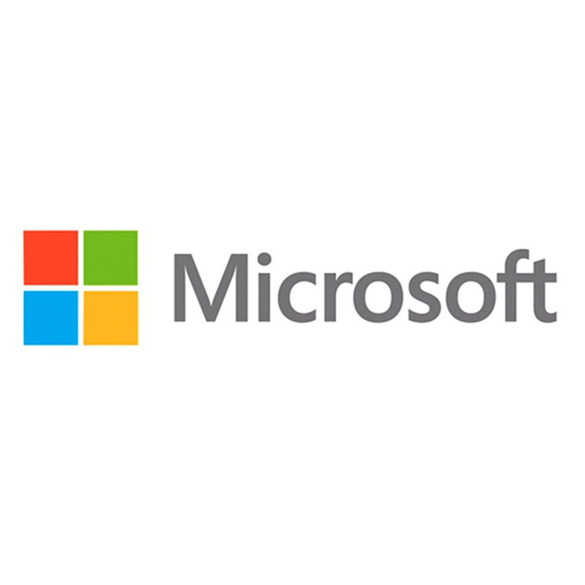
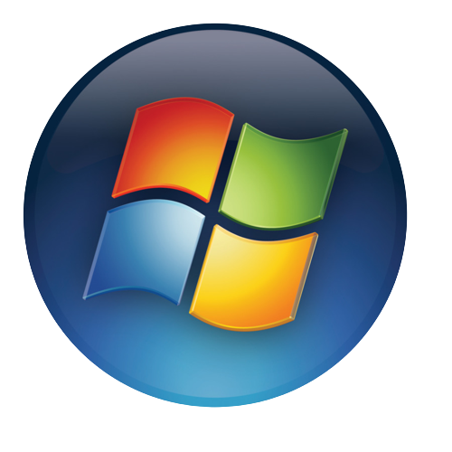
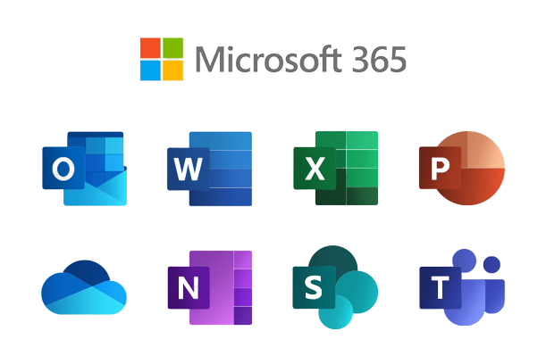
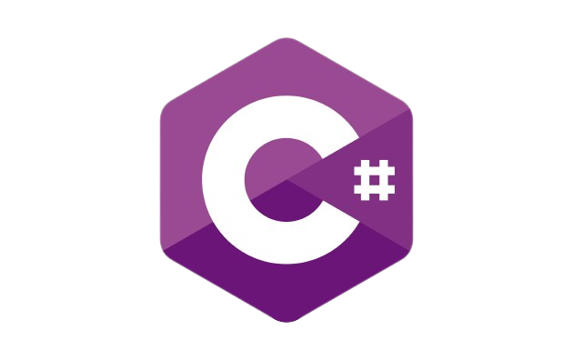
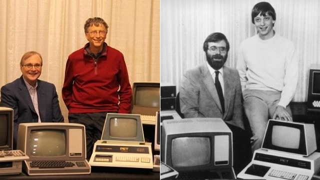
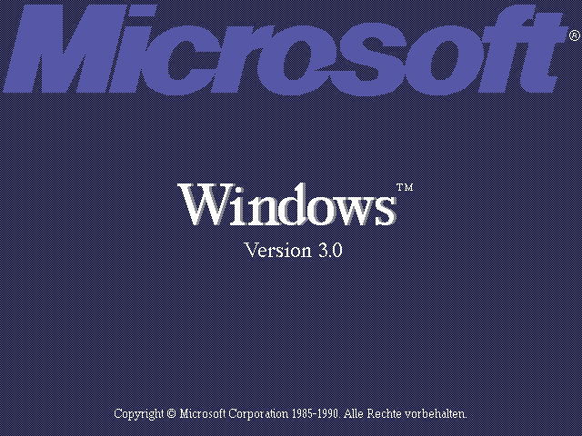
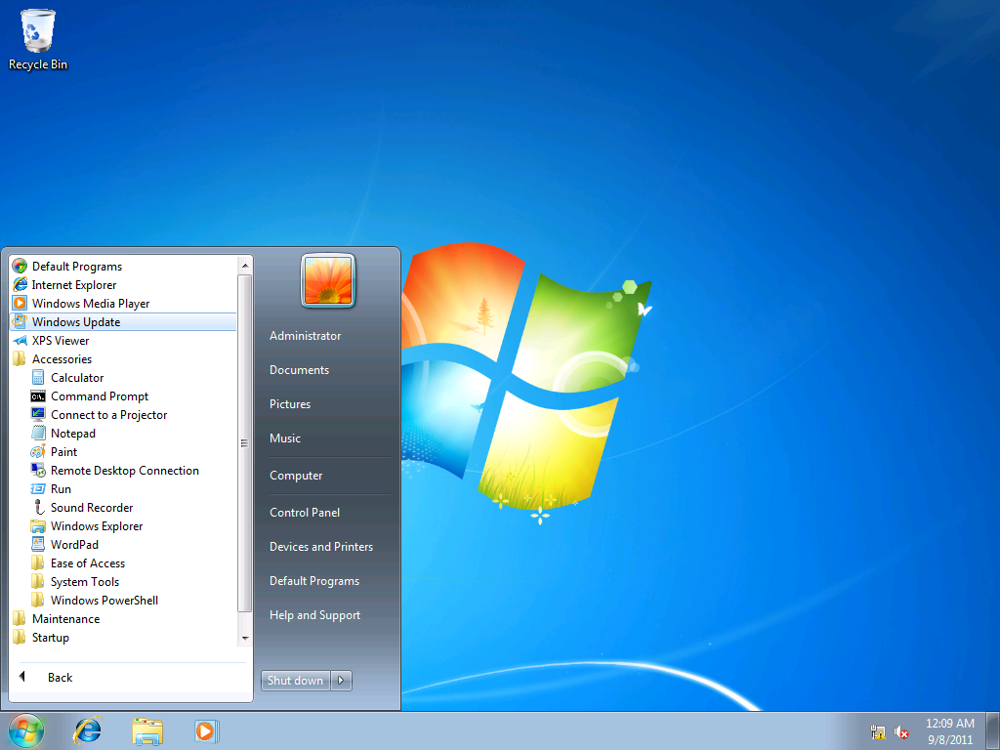
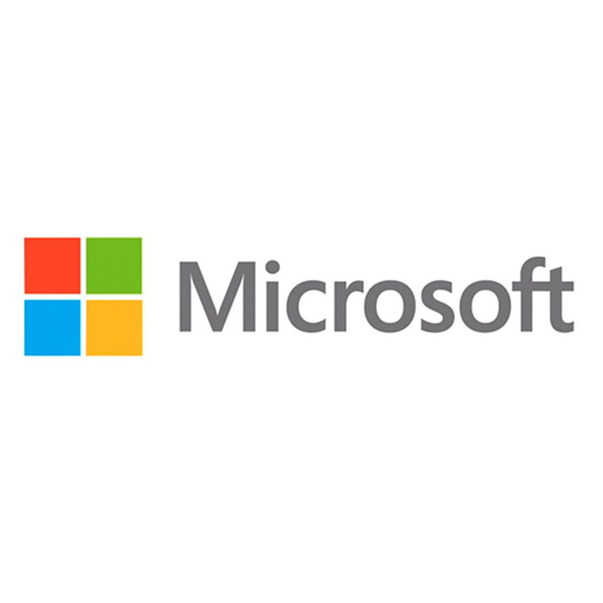
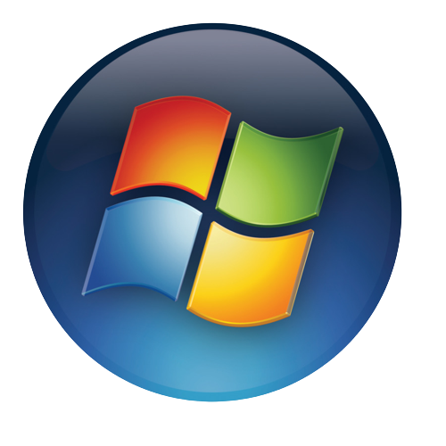
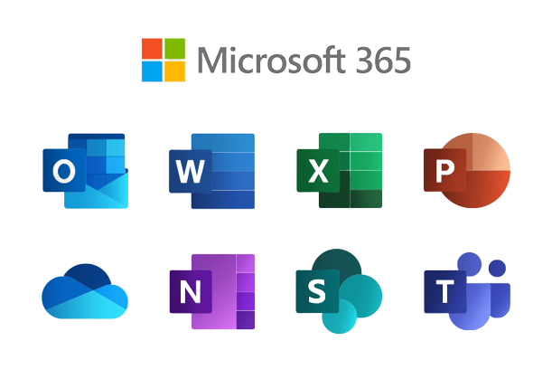
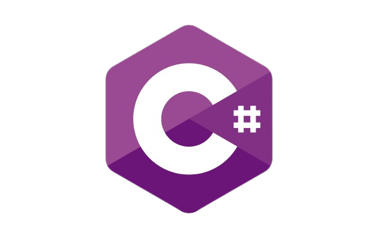
 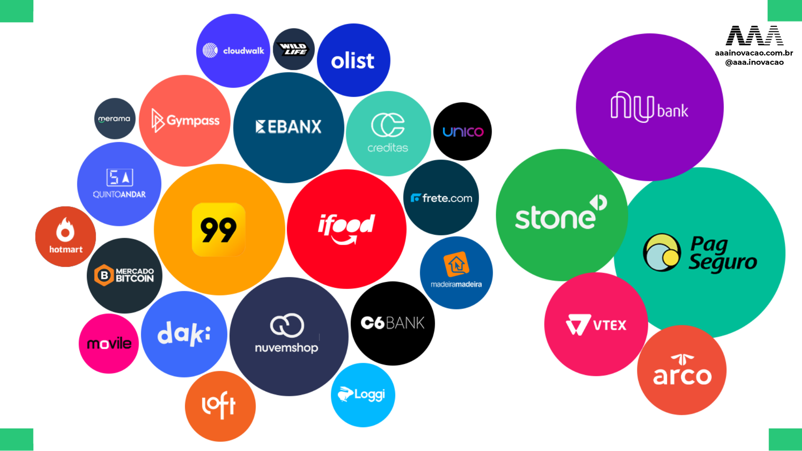
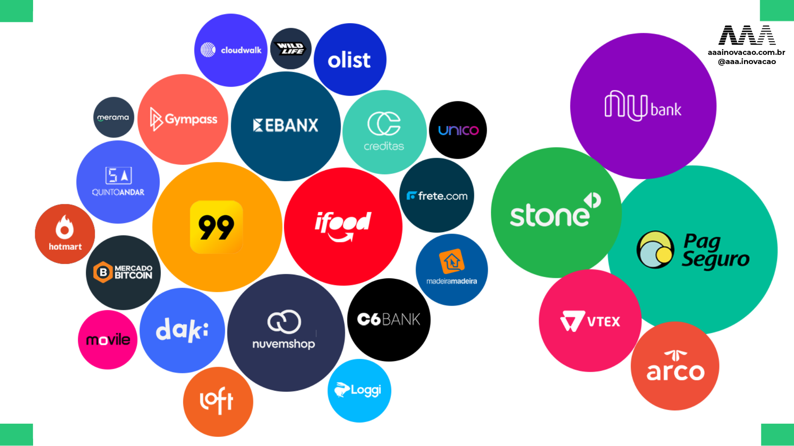
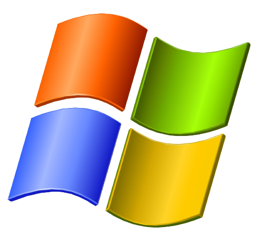
INICIAR
00:00
Lixeira
História no Mundo
História no Brasil
Principais Tecnologias
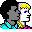
Principais Contribuições
História da Microsoft no Mundo
X
- Arquivo
- Editar
- Exibir
- Ferramentas
- Ajuda
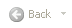
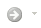
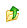
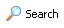
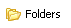
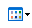
Endereço
Ir
- Fundação e Ascensão:
- Domínio do Mercado de PCs:
- Evolução para Serviços e Nuvem:
- Inovação Contínua e Diversificação:
Fundação e Ascensão:
- 1975: Fundação por Bill Gates e Paul Allen.
- 1980: Parceria com IBM.
- 1985: Lançamento do Windows 1.0.
- 1989: Lançamento do Office.
Domínio do Mercado de PCs:
- 1985: Lançamento do Windows.
- 1990: Windows se torna padrão.
- 1995: Lançamento do Windows 95.
- 2001: Lançamento do Windows XP.
Evolução para Serviços e Nuvem:
- 2001: Lançamento do Windows XP.
- 2009: Lançamento do Windows 7.
- 2010: Foco em serviços e nuvem.
- 2012: Lançamento do Windows 8.
Inovação Contínua e Diversificação:
- 2014: Satya Nadella torna-se CEO.
- 2015: Lançamento do Windows 10.
- 2020: Expansão em IA, nuvem, gaming.
História da Microsoft no Brasil
X
- Arquivo
- Editar
- Exibir
- Ferramentas
- Ajuda
Endereço
Ir
- Ano de 1989
- Ano de 2019
- Microsoft mais Brasil
Microsoft no Brasil Ano de 1989
- Abertura da primeira sede da Microsoft.
- Introdução de produtos e serviços no mercado local.
- Formação de parcerias locais estratégicas.
Tânia consentindo
- Nomeação de Tânia Consentino como Presidente da Microsoft Brasil.
- Destaque da liderança feminina no setor de tecnologia.
- Incentivo a iniciativas de inovação e startups.
Microsoft mais Brasil 20 de outubro de 2020
- Investimento em projetos sociais e comunitários no Brasil.
- Parcerias com organizações para promover a inclusão digital.
- Apoio a startups e empreendedores brasileiros.
Principais Tecnologias da Microsoft
X
- Arquivo
- Editar
- Exibir
- Ferramentas
- Ajuda
Endereço
Ir
- Windows
- Pacote Office
- Linguagem C#
- Net Framework
O Windows
- Sistema Operacional mais utilizado no mundo
- Criado em 1985
- Já teve uma versão para celular
- Atualmente na versão 11
Pacote Office
- Ferramentas Decisivas no Mercado de Trabalho
- Criado em 1990
- Possui uma versão gratuita
- Atualmente está mudando de nome para Microsoft 365
A Linguagem C#
- Uma das linguagens de programação mais utilizadas no mundo
- Criada em 2000
- Usada principalmente para criar apps de computador e também jogos
- Suporte para computadores, celulares e em IOT(Internet of Things)
.Net Framework
- Plataforma para desenvolvimento e execução de sistemas
- Criada em 2002
- Usada principalmente para execução de códigos
- Também possui suporte para criação de sites
Principais Contribuições da Microsoft na SI
X
- Arquivo
- Editar
- Exibir
- Ferramentas
- Ajuda
Endereço
Ir
- Parcerias com Instituições de Ensino
- Programas de Capacitação Profissional
- Projetos de Inclusão Digital
- Fomento a Startups e Inovação
Parcerias com Instituições de Ensino:
- Programas de estágio e trainee.
- Cursos e workshops em parceria com universidades.
- Bolsas de estudo em áreas de tecnologia.
- Desenvolvimento de currículos e materiais educacionais.
Programas de Capacitação:
- Certificações em tecnologias Microsoft
- Treinamentos em habilidades de programação.
- Workshops práticos em desenvolvimento de software.
- Programas de mentoria e coaching.
Projetos de Inclusão Digital:
- Oficinas de informática em comunidades carentes.
- Acesso gratuito a recursos educacionais online.
- Doação de dispositivos e acesso à internet.
- Parcerias com ONGs para promover a inclusão digital.
Fomento a Startups e Inovação:
- Programas de aceleração para startups.
- Investimento em fundos de capital de risco.
- Hackathons e competições de inovação.
- Incubadoras e espaços de coworking para empreendedores.